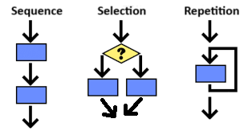
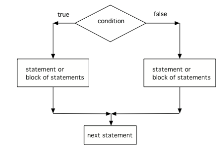

Selection and Iteration
Every algorithm (算法) consists of a sequence of steps. Up until now, we have been writing code one line at a time in sequence which then gets executed by the computer in that sequential order by default.
However, we can create more complex algorithms that do not follow the default sequential order.
In this unit, we will learn to branch the code into different paths or repeat a block of code.
The building blocks of algorithms are sequencing (顺序), selection (选择), and repetition (重复).
Algorithms can contain selection, through decision making, and repetition, via looping. All algorithms for problems that can be solved on a computer can be constructed by using just these three control structures.

Sequence, Selection, and Repetition
Selection is the process of making a choice based on a true or false decision.
In programming, selection, also called branching (分支), occurs when a choice of how the execution of an algorithm will proceed is based on a true or false decision.
An algorithm may take different paths based on certain conditions, often using true/false logic.
Textbook prompt: Click on all of the selection (decision or branching) phrases in the following algorithm.
Morning routine:
1. Wake up.
2. Snooze for 5 more minutes.
3. Check your phone and the weather.
4. If there is a text from your friend, answer it.
5. Brush teeth and shower.
6. If it’s cold, wear a sweater.
7. Check if you have homework due. If so, pack it in your bag.
8. Put on your sunglasses if it's sunny.
9. Leave for school or work.A correct response identifies these selection phrases:
4. If there is a text from your friend, answer it.6. If it’s cold, wear a sweater.7. Check if you have homework due. If so, pack it in your bag.8. Put on your sunglasses if it's sunny.The textbook feedback says to look for the word if to identify selections.
Repetition is when a process repeats itself until a desired outcome is reached.
In programming, repetition is achieved through loops (循环). A loop allows an algorithm to repeat certain actions until a specified condition is met.
Another term commonly used for repetition is iteration (迭代).
Textbook prompt: Click on all of the repetition phrases in the following algorithm.
Morning routine 2:
1. Wake up.
2. Snooze for 5 more minutes. Keep waking up and snoozing for the next 15 minutes.
3. If there is a text from your friend, answer it. Do this for all of your texts.
4. Brush teeth and shower.
5. If it’s cold, wear a sweater.
6. Check if you have homework due. If so, pack it in your bag.
7. Repeat packing items until your bag is ready.
8. Leave for school or work.A correct response identifies these repetition phrases:
2. Keep waking up and snoozing for the next 15 minutes.3. Do this for all of your texts.7. Repeat packing items until your bag is ready.The textbook feedback says to look for repeat, all, or keep.
For complex problems, it is important to plan your solution before writing code.
Pseudocode (伪代码) is an informal way of describing the steps in an algorithm in a human language like English while following the sequence, selection, and repetition structure of a programming language.
Flowcharts (流程图) are diagrams that represent the steps in an algorithm.

Flowchart for selection branching the code into two paths
Selection is usually represented as a triangle in a flowchart, and arrows are used to show repetition.
Both pseudocode and flowcharts are tools that help you plan your algorithm before writing code.
Textbook prompt: Put the following pseudocode algorithm steps for buying a birthday gift for your friend in order. Make sure some of the steps are indented to be inside the repetition and that you buy the more expensive gifts first.
Initialize total amount of money.
Repeat while still money in total:
If total more than $25, buy a gift card and subtract 25 from total.
If total more than $10, buy a small cake and subtract 10 from total.
If total more than $5, buy some candy and subtract 5 from total.
If total more than $1, buy a card and subtract 1 from total.
Otherwise, give them the change.$16Given the pseudocode for buying a gift, assume you have $16 to spend. What will be the outcome of the algorithm?
Answer: C. You still have $1 left after the small cake and candy, so the card rule can run.
$22Given the pseudocode for buying a gift, assume you have $22 to spend. What will be the outcome of the algorithm?
$1.Answer: D. The textbook feedback says: Yep! That's a lot of cake!
In this group activity, you will work together to create an algorithm for a common problem: choosing a snack.
Create pseudocode for this problem. Make sure you include selection and repetition in your algorithm.
For example, if there is no chocolate, you may want to keep searching for another snack. If you’re thirsty, you may want to consider the drinks in the fridge. You may want to consider every item in the fridge or your leftover Halloween candy stash before deciding on the perfect snack.
Textbook prompt:
A complete response should show at least one decision and at least one repeated action.